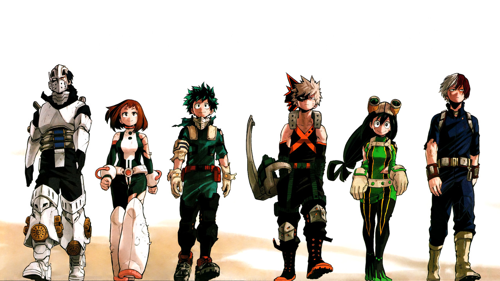

僕のヒーローアカデミア
あらすじ
中国の軽慶市での「発光する赤児」の報道以来世界各地で超常現象が報告され、
世界総人口の約8割が超常能力“個性”を持つに至った超人社会。
“個性”を悪用する敵（ヴィラン）を“個性”を発揮して取り締まるヒーローは
人々に讃えられていた。主人公の緑谷出久も幼い頃から平和の象徴と謳われる
ヒーローオールマイトに憧れていた。出久は超常能力が発現しない“無個性”
だったが、ヒーローになるという夢を諦めきれず、偉大なヒーローを多く輩出して
きた偏差値79の国立雄英高校の難関ヒーロー科への進学を目指すが、幼馴染みで
優秀な“個性”を持つ爆豪勝己をはじめとした周囲からは「合格は絶望的」と馬鹿にされていた。
